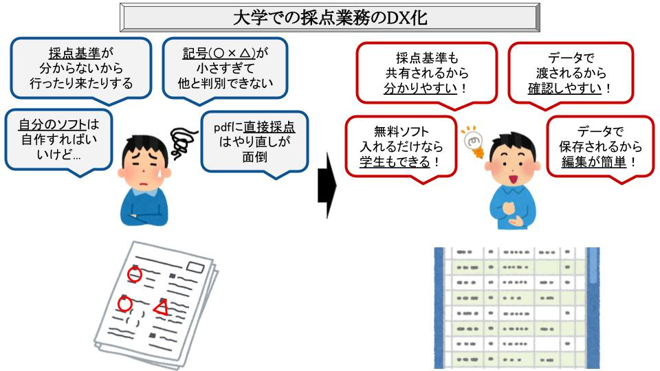
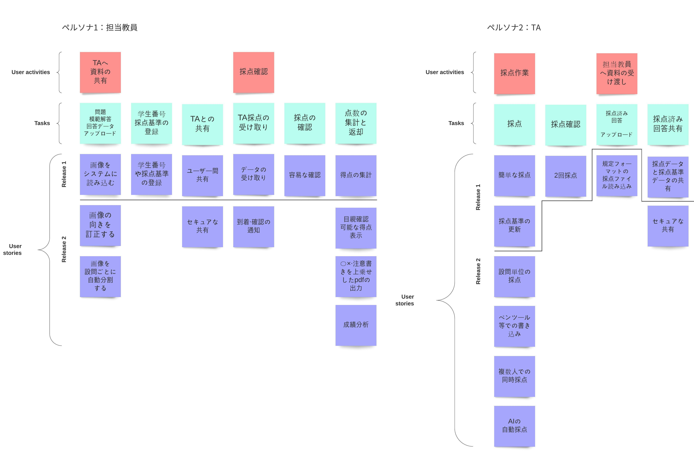
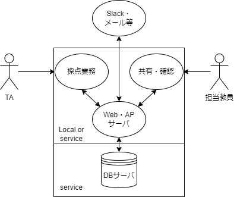
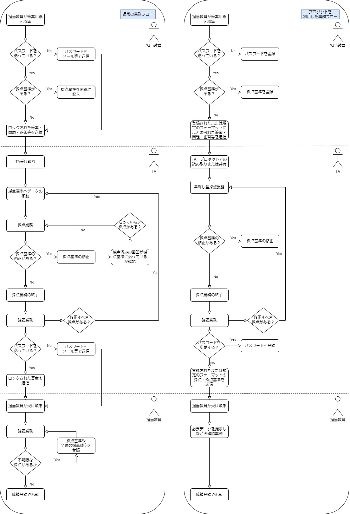
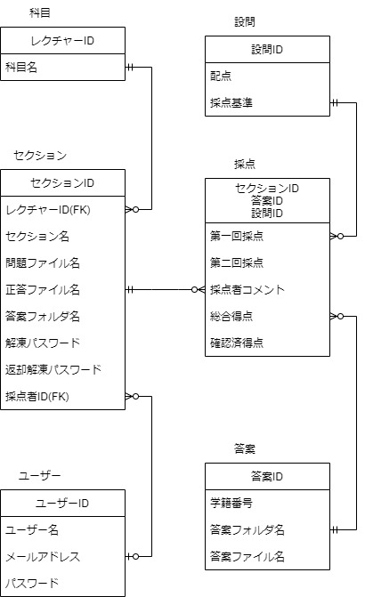
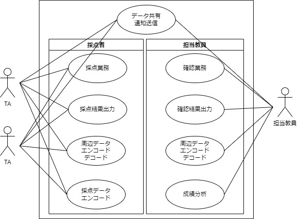

TAが採点業務を行い、担当教員が確認業務を行う「大学での採点業務」を効率化するシステムです
URL
目次
本プロダクトのモチベーション
動機
- 設計関連の復習・学習のため
- ちゃんとしたWeb API設計の学習
- 担当教員からtoolkitの採点プログラムを提供して欲しいと言われたから
イントロダクション
大学の講義は多くの学生が履修しており、課題を出した場合それら全員分を採点する必要がある。 しかし一般的に授業を受け持つ大学教員などは教職の他に研究職や雑務など多忙であるため、 採点業務を代理で行う目的で研究室に所属している学生からティーチングアシスタント(TA)を選び雇うことがある。 大学教員(担当教員)の負担を軽減する採点業務は段階的に行われ、採点-確認で分けられる。 担当教員が収集した答案をTAが採点し、担当教員が採点済み答案を確認し不備があれば修正することで採点業務が終了する。 文部科学省の「教員勤務実態調査」(H28) によると採点業務を含む成績処理業務は授業を含めた25個の業務のうち4番目に勤務時間を占有していた。 教育委員会主導で各学校が校務支援システムの導入を推進した結果、 5年後の「教育委員会における学校の働き方改革のための取組状況調査」(R3) では47都道府県(1793個の教育委員会)のうち97.9%が成績処理についてICTを活用して負担軽減を行っていると答えた。 この様に採点業務は効率化すべき業務だと考えられ、現在では多くのサービスが提供されている。 採点業務を効率化するサービスの例として テスト採点支援ソリューション(NEC)や 採点ナビなどが存在する。 これらは小中高の採点業務を効率化するために提供されているサービスであり、 設問ごとにまとめた採点(串刺し採点)や成績分析，AIによる自動分割・自動採点を行うことができる。 一方で大学のための採点効率化サービスは入試関連のサービスのみ存在し、 また上記のサービスで採点と編集を伴う確認を行うには2回採点や複数人同時採点を行う必要がある。 しかし2回採点や複数人同時採点では担当教員も採点を行う必要があるため、TAを雇う前と比較して担当教員の負担は軽減していない。 よって大学での採点-確認で構成される採点業務を支援し、効率化するシステムが必要である。基本設計
ペルソナの設定
ペルソナ1：担当教員
- 職業
- 大学教員
- 生活パターン
- 研究と教育業務・事務作業
- 課題
- 採点業務に時間とエネルギーが取られる
- 採点基準がTAによってまちまち
- 採点基準が同課題の中でブレている
- 小さすぎて丸などの採点記号が判別できない
- 採点効率化のために独自のプログラムを組んだりしている
ペルソナ2：TA
- 職業
- 学生
- 生活パターン
- 授業やバイト、研究などの活動
- 課題
- 採点デバイスへのデータ移行が大変
- 採点基準を採点しながら修正する必要がある
- pdfに直接採点する場合採点を修正する手間がかかる
- 問題や答えのpdfが一枚だとどこを見るべきか直観的に分からない
ユーザストーリーマップ

機能を順次追加する開発方針を取ろうと考えたためユーザーストーリーマップを作成しました。 ユーザーストーリーマップではペルソナごとにユーザーが行う行為、細分化された行為、システムが提供できる価値について記述しました。
システム図

シンプルなシステム構成について記述しました。 サービスとして提供するものはWeb・AP・DBサーバで、サービスではweb上での採点-確認機能の他通知やデータの共有を行います。 またWeb・APサーバはローカルで動かすことで採点-確認機能を利用することができます。 ローカルの場合のデータ共有方法として、 アプリケーションを利用し採点結果や採点基準などのデータを規定の形式でデコードし、 Slackやメールなどで共有できることを想定しています。
業務フロー

業務フローでは通常の業務フローとプロダクトを利用した業務フローについて記述しました。 プロダクトやサービスを利用することで、特に採点-確認業務の効率化を行います。採点業務を行う際、プロダクトを利用すると串刺し採点で全ての答案の設問単位で一度に採点することができます。 またシステム上のファイルなため、採点基準の変更やそれに伴う採点済み答案の編集が容易に行えます。 採点終了時には採点データや採点基準データなどを規定の形式で送ることで、 採点記号が小さい問題などを解決し確認が容易なデータを送ることができます。
確認業務を行う際、プロダクトでデコードされたデータを利用するため不明瞭な点が無くなり、確認業務を効率的に行うことができます。
ここでサービスを利用した場合、web上で簡単に採点-確認を行うことができまた、 アップロードされたデータの共有や採点リクエスト，採点終了，採点基準の変更リクエストの通知を行うことができます。
ER図

ER図ではデータベースに必要なデータについて論理モデルで書き出しました。- 科目テーブルは「線形代数」や「情報数学」などを保存します
- ユーザーテーブルはTAのデータや担当教員のデータを保存します
- セクションテーブルは科目の「第一回」や「第二回」に関わるデータを保存します
- 設問テーブルは課題内の「(1)」や「(2)」など1つの問題に対するデータを保存します
- 答案テーブルは提出された課題1枚のデータを保存します
- 採点テーブルは採点されたデータを答案・設問単位で保存します
ユースケース図

ユースケース図ではユーザーから見た機能について書き出しました。周辺データは採点基準等のデータを指します。 採点データのエンコードはTAがpdfに直接書いた採点をシステムにアップロードすることを指します。詳細設計
詳細設計については順次行っていきます。開発
アーキテクチャについては機能を順次追加する開発方針のため、修正や追加の影響が出にくいMVCアーキテクチャを利用しようと考えています。 またローカルでも動くwebサーバなので、 Go/Ginを利用しコンパイルしたプログラムを提供することでローカルで環境を新たに作る必要無く動かせることを目指します。
自動CIの構築
Github Actionを用いて自動テストを構築しました。自動テストはdevへのpush/pull requestとmainへのpull requestをトリガーにしています。 mainへのpushは禁止にし、pull requestは全てのテストが通過しないとマージ出来ません。
Github Projectの利用
ISSUEにタスクを書き出し、それをToDO/In Progress/Doneのボードで管理しています。
振り返り
- ハッカソン等で設計は程々にコーディングしてたので、今回基本設計という開発指針の素晴らしさを再確認した
- なぜ基本設計でこんな多くの枚数を書かなければならないのかと考えていたが、後から見直すとそれぞれ役割が分かれており重要なのだと分かった
- 基本設計の始めと終わりで同じ意味を示す用語が異なる場合があったので用語集は大切だと思った